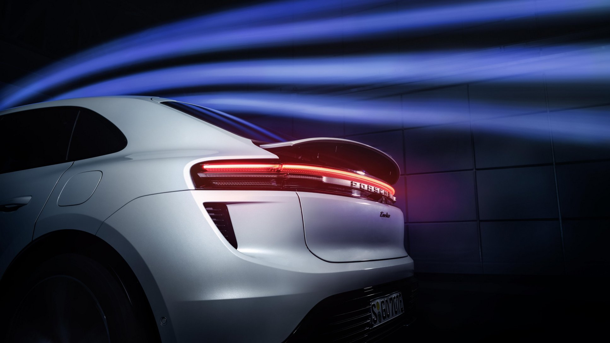

Porshe in England
Porsche cars are available in England through authorized dealerships.
Porsche has a strong presence in the United Kingdom, with several dealerships located across the country.
These dealerships offer a range of Porsche models for sale, including sports cars, SUVs, and electric vehicles.
Customers in England can visit their nearest Porsche dealership or explore online platforms to find and purchase a Porsche car.
Additionally, Porsche provides after-sales services, maintenance, and support for their vehicles through their authorized service
centers in England.Porsche dealerships in England provide a comprehensive buying experience for customers. They have knowledgeable
sales representatives who can assist in selecting the right Porsche model based on individual preferences and requirements.
Customers can explore various options, customizations, and features available for each Porsche model.
Furthermore, Porsche offers after-sales services and maintenance support through their authorized service centers.
These service centers are equipped with specialized tools and trained technicians who ensure that Porsche vehicles
are properly serviced and maintained to the highest standards.
News

Two market premieres for Porsche at Auto China 2024
25/04/2024
The sports car manufacturer Porsche is firmly underscoring its ‘In China,
for China’ strategy at the Auto China 2024 show in Beijing with a special China version of
the new-generation Taycan, the market premiere of the all-electric Macan...
Read More

Streamlining: the standard-setting new Macan
24/04/2024
Whether aerodynamics, connectivity, range, or driving dynamics, the innovations
in the new Macan are setting benchmarks. At the same time, Porsche is working toward a strategic...
Read More

On a road trip to Seville in the new Taycan
03/04/2024
Aiming for the sweet spot between speed, consumption and charging infrastructure, Mayk Wienkötter,
Porsche’s spokesperson for the Taycan and electromobility, took a trip from Stuttgart to Seville...
Read More
Porsche, Manthey EMA and Thomas Preining launch
25/04/2024
Next weekend in Oschersleben, the DTM heads into its 40th season
with 20 vehicles lining up on the grid. Porsche’s customer team Manthey EMA brings
two 911 GT3 R cars to...
Read More